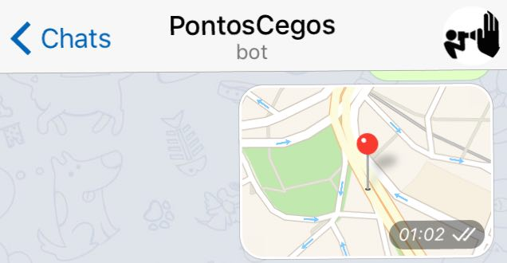

pontos cegos
detecção e mapeamento de câmeras de vigilância
2016 ~ 2020
Pontos Cegos é um projeto que tem como objetivo criar ferramentas de contra-vigilância e é dividido em duas frentes de pesquisa, as Táticas de (In)Visibilidade:
TÁTICAS DE VISIBILIDADE
Foi criado um capacete capaz de detectar automáticamente câmeras de vigilância e indicar, a seus usuários, quando estão sendo filmados. Esse dispositivo revela e torna visíveis câmeras cada vez mais discretas e camufladas nas cidades.
O aparato também possui um GPS e ao detectar uma câmera, suas coordenadas são registradas e armazenadas em um mapa (veja abaixo), fazendo um mapeamento automático de um dado percurso.


TÁTICAS DE INVISIBILIDADE | EM ANDAMENTO
Está em desenvolvimento um traçador de rotas que permite criar caminhos de um ponto A até um ponto B de uma cidade passando apenas pelos pontos cegos de suas câmeras.
Aqui um primeiro protótipo do traçador de rotas.
Também, nessa frente de pesquisa, ofereço oficinas para criação de ferramentas de invisibilidade, capazes de ofuscar as imagens registradas por câmeras de vigilância.


MAPA
CONSTRUA SEU APARATO

projeto no github (códigos, pcb e etc)
baixe aqui o passo-a-passo resumido
COLABORE
Colabore via Telegram, compartilhando sua localização com o BOT @PontosCegosBot




Fotos
Pedro Andrada, Ariana Miliorini, Félix Blume
Apresentações:
redBull Station | São Paulo
MedialabMX | Ciudad de México
Agradecimentos:
Clarisse Valadares, Luiza Brina, Maria Vitória, Pedro Godoy, Bizafra, Thiago Hersan